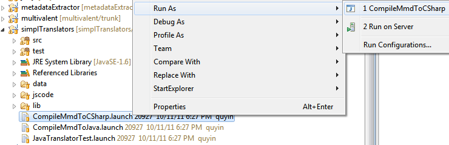

Prior to authoring your own wrappers, you need to setup the environment using Java and Eclipse. You will author your own wrappers in Eclipse, in the form of XML files, and compile them into code in a target language (e.g. Java or C#) for use.
The core of the meta-metadata language is a cross-language type system that represents semantics in different systems and programming languages, with the support of S.IM.PL. With meta-metadata language, application developers, information curators, librarians, and power users author meta-metadata wrappers to specify data structure, extraction rules, semantic actions, presentation rules, and other aspects of semantics.
Follow the following pages through examples to learn how to write your own wrappers in meta-metadata language:
- data definition
- information extraction
- semantic actions
- advanced topics (nested type definition, generics, etc.)
After authoring your own wrappers, you need to compile them into a target programming language, such as Java or C#, so that the meta-metadata and/or your application can use them. Remember that you need to setup the environment using Java and Eclipse to use the compiler.
MetaMetadata compiler compiles meta-metadata repository into metadata class declarations in a target programming language, with the same type hierarchy. The compilers themselves are written in Java, in the Java project simplTranslators, in the package ecologylab.semantics.compiler.
Currently, the entry class for the meta-metadata-to-Java compiler is
MetaMetadataJavaTranslator. For C#, the entry class is
MetaMetadataDotNetTranslator.
For your convenience, two launch files have been added to the project:
- Run CompileMmdToJava.launch to compile to Java.
- Run CompileMmdToCSharp.launch to compile to C#.
You can launch these shortcuts from Eclipse by right clicking it and select Run, as shown below:

The compiler generates metadata class declarations in default locations:
- For Java, it is the ecologylabGeneratedSemantics project.
- For C#/.NET, it assumes that your workspace is in the same level with your Eclipse workspace, and with the name ecologylabSemantics.NET for the solution folder. (See environment setup for the recommended layout)